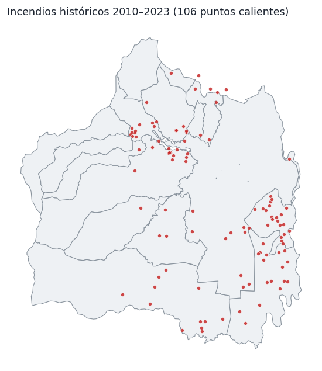
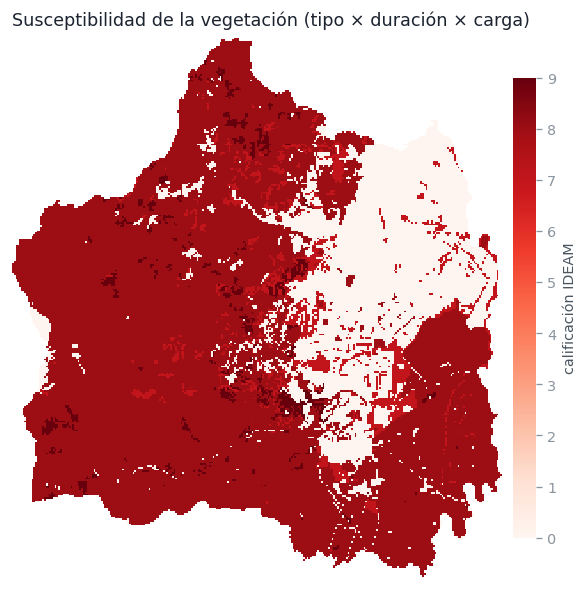
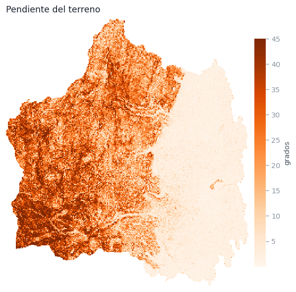
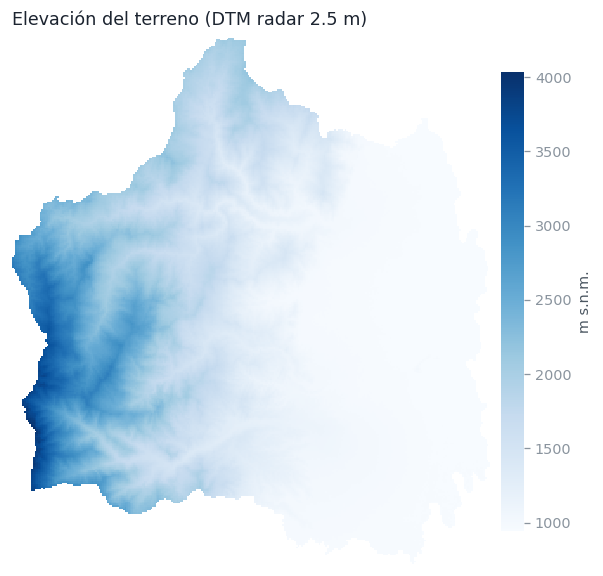
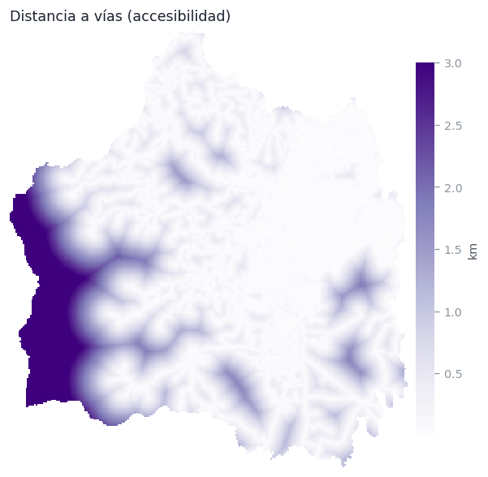

El SAT de Incendios Forestales de Santiago de Cali estima, cada 6 horas y para todo el distrito, la probabilidad de que se presente un incendio forestal. Combina un modelo de machine learning entrenado con los incendios reales de 2010–2023 con datos de clima actualizados en tiempo casi real, y publica el resultado como un mapa de tres niveles de alerta.
Condiciones en las que ocurrieron 2 de cada 3 incendios históricos.
Franja de precaución: cubre el 90% de los incendios históricos junto con la alta.
Condiciones en las que históricamente casi no se presentaron incendios.
1. El flujo del sistema
El proceso corre automáticamente hacia las 00:00, 6:00, 12:00 y 18:00 (hora de Colombia). La actualización del mediodía es clave: en Cali el viento aumenta después del mediodía, elevando el riesgo de propagación en las tardes.
2. Las variables del modelo
Siguen los componentes de la amenaza del protocolo IDEAM para zonificación de riesgo por incendios de la cobertura vegetal:





3. ¿Cómo se entrenó el Random Forest?
Un Random Forest es un conjunto de cientos de árboles de decisión: cada árbol aprende reglas del tipo «si llevan más de 8 días sin llover ≥10 mm, la temperatura supera 26 °C y la celda está a menos de 500 m de una vía con vegetación susceptible → probable incendio», y la predicción final es el voto de todos los árboles (600 en este caso).
El conjunto de entrenamiento
Presencias: los 106 incendios históricos, cada uno con las condiciones del territorio
en su ubicación y el clima real del día en que ocurrió (reconstruido con ERA5).
Pseudo-ausencias: 424 combinaciones aleatorias de lugar y fecha (2010–2023) alejadas de
cualquier incendio registrado (a más de 2 km o 7 días), que representan condiciones «normales».
Entrenamiento y prueba
El modelo se evaluó de dos formas independientes: validación cruzada de 5 particiones (se entrena con el 80% de los datos y se predice el 20% restante, rotando 5 veces) y una prueba más exigente: holdout temporal — se entrenó solo con 2010–2020 y se le pidió predecir los incendios de 2021–2023, que nunca vio. Los umbrales de alerta se fijaron sobre predicciones fuera-de-muestra: MEDIA retiene el 90% de los incendios, ALTA el 66% en la menor área posible. Finalmente las probabilidades se calibraron (isotónica) para que «probabilidad 0.4» signifique realmente ~40%.
4. Calidad del modelo
AUC (área bajo la curva ROC) mide la capacidad de distinguir días-lugares con incendio de días-lugares sin incendio: 0.5 = azar, 1.0 = perfecto. Valores de 0.85–0.90 son un desempeño alto para predicción de incendios con muestras pequeñas.
¿Dónde cayeron los incendios reales? (predicciones fuera de muestra)
| Nivel de alerta emitido | Incendios reales | No-incendios (424) |
|---|---|---|
| 🔴 ALTA | 70 (67%) | 47 |
| 🟠 MEDIA | 25 (24%) | 113 |
| 🟢 BAJA | 10 (9%) | 264 |
Desempeño en operación (verificación continua)
Desde su puesta en línea, el sistema se autoevalúa: cada vez que se registra un incendio nuevo (satelital o reportado en campo), se consulta qué nivel de alerta estaba publicado en ese lugar en el momento del inicio y el resultado se guarda sin edición posible. Esta es la métrica más exigente: predicciones reales contra eventos reales.
¿Qué variables pesan más?
Validación del clima contra estaciones en tierra
ERA5 se contrastó con observaciones reales: temperatura diaria del aeropuerto (GHCN/NOAA, 1.684 días) y la serie anual de lluvia de la estación Cali-IDEAM (42 años). Conclusión: correlación moderada y fuerte sesgo húmedo de ERA5 en Cali (~3× la lluvia real). Por eso el umbral de «día con lluvia» del contador se calibró a la frecuencia real (~131 días de lluvia al año) y el portal muestra las observaciones de las estaciones IDEAM junto al pronóstico.
5. Fuentes de datos en tiempo real
| Dato | Fuente | Consulta |
|---|---|---|
| Clima (pronóstico y reanálisis ERA5) | Open-Meteo | open-meteo.com |
| Estaciones meteorológicas de Cali | IDEAM — Datos Abiertos Colombia | datos.gov.co |
| Puntos calientes satelitales (48 h) | NASA FIRMS (VIIRS) | firms.modaps.eosdis.nasa.gov |
| Estaciones de bomberos | OpenStreetMap + registro local | openstreetmap.org |
| Código y datos del sistema | GitHub (abierto) | github.com/al3jandroangel/sat-incendios-cali |
6. Referencias
- Urrutia Garcés, C. A. (2018). Zonificación de riesgos a incendios forestales en zona rural del municipio de Santiago de Cali [Trabajo de grado, Especialización en Sistemas de Información Geográfica]. Universidad de Manizales, Facultad de Ciencias e Ingeniería, Manizales. — Base metodológica de la susceptibilidad de la cobertura vegetal (tipo, duración y carga de combustibles) y de los rangos de calificación de la amenaza empleados en este sistema.
- IDEAM (2011). Protocolo para la realización de mapas de zonificación de riesgos a incendios de la cobertura vegetal — Escala 1:100.000. Instituto de Hidrología, Meteorología y Estudios Ambientales, Bogotá D.C., Colombia. — Marco oficial de los componentes de la amenaza (susceptibilidad, factores climáticos, relieve, accesibilidad y factor histórico).
- Hersbach, H., Bell, B., Berrisford, P., et al. (2020). The ERA5 global reanalysis. Quarterly Journal of the Royal Meteorological Society, 146(730), 1999–2049. doi:10.1002/qj.3803 — Reanálisis climático con el que se reconstruyó el clima diario 2010–2023 del entrenamiento.
- Zippenfenig, P. (2023). Open-Meteo.com Weather API [Software]. Zenodo. doi:10.5281/zenodo.7970649 — Servicio de acceso a ERA5 y al pronóstico operativo del sistema.
- IDEAM. Datos Hidrometeorológicos Crudos — Red de Estaciones IDEAM [Conjunto de datos]. Datos Abiertos Colombia. datos.gov.co/d/57sv-p2fu — Observaciones en tiempo casi real de las estaciones Siloé, Universidad del Valle y Base Aérea M.F. Suárez.
- Giglio, L., Schroeder, W., & Justice, C. O. (2016). The Collection 6 MODIS active fire detection algorithm and fire products. Remote Sensing of Environment, 178, 31–41. doi:10.1016/j.rse.2016.02.054
- Schroeder, W., Oliva, P., Giglio, L., & Csiszar, I. A. (2014). The New VIIRS 375 m active fire detection data product. Remote Sensing of Environment, 143, 85–96. doi:10.1016/j.rse.2013.12.008 — Junto con [6], productos de puntos calientes de NASA FIRMS usados como registro histórico de incendios y como capa de focos activos.
- Menne, M. J., Durre, I., Vose, R. S., Gleason, B. E., & Houston, T. G. (2012). An overview of the Global Historical Climatology Network-Daily database. Journal of Atmospheric and Oceanic Technology, 29(7), 897–910. — Serie diaria del aeropuerto Alfonso Bonilla Aragón (NOAA/NCEI) usada en la validación de temperatura de ERA5.
- Alcaldía de Santiago de Cali — IDESC. Infraestructura de Datos Espaciales de Santiago de Cali: jerarquización vial, base catastral 2022 y modelo digital de terreno de radar 2.5 m. idesc.cali.gov.co
- Breiman, L. (2001). Random Forests. Machine Learning, 45(1), 5–32. doi:10.1023/A:1010933404324 — Algoritmo de aprendizaje del modelo.
- Pedregosa, F., Varoquaux, G., Gramfort, A., et al. (2011). Scikit-learn: Machine Learning in Python. Journal of Machine Learning Research, 12, 2825–2830. — Implementación del Random Forest y la calibración isotónica.
- OpenStreetMap contributors (2026). OpenStreetMap [Base de datos], bajo licencia ODbL. openstreetmap.org — Ubicación de las estaciones de bomberos (complementada con registro local).